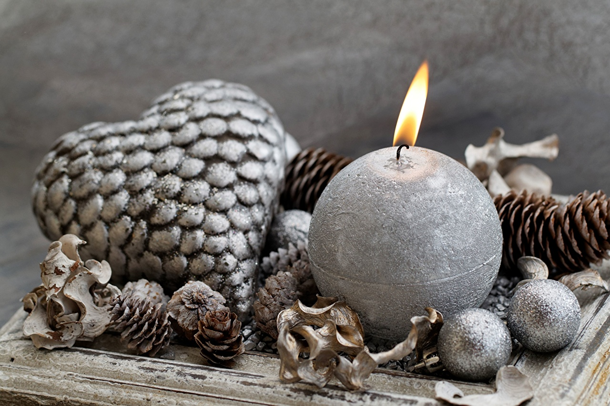
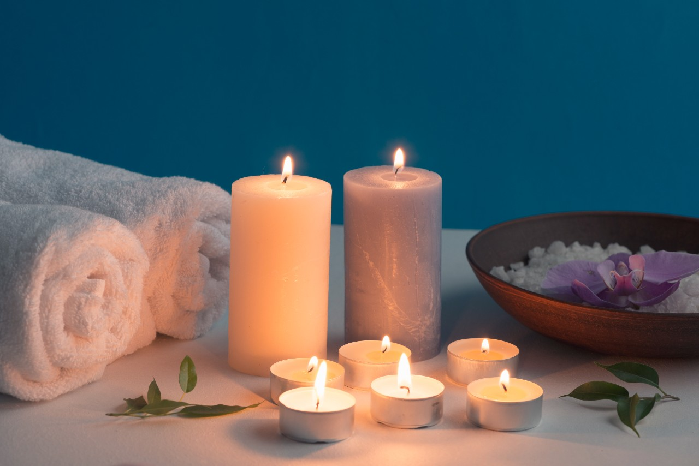

- 


- 
DESDE 1990...
Esta propuesta nace con la intención de brindar un producto acorde a las nececidades del cliente.
Mucho antes del descubrimiento de la electricidad, las velas fueron utilizadas como una fuente de luz. Una mecha de fibras trenzadas, generalmente de algodón, está encerrada dentro de su propia fuente de energía, conocida como la cera.
El proceso de fabricación de velas comienza con la fusión de la cera. La estearina a menudo se añade a la cera para aumentar su resistencia, lo que permite que gotee menos y se derritan más lentamente. Fragancia o colorante puede ser añadido a la cera fundida en este momento. La cera fundida se vierte entonces en un molde, que contiene una mecha, para crear una vela moldeada, o la mecha se sumerge repetidamente en la cera fundida para cubrir y producir una forma cónica o una vela hundida a mano. Las velas también pueden ser rodadas, un método común utilizado con láminas de cera de abejas. Sea cual sea el método que se utilice, la cera se deja enfriar y se endurece después del proceso.
NUESTRA MATERIA PRIMA
La parafina es el tipo más común de cera para la fabricación de velas. Es una cera natural que las plantas producen para protegerse de la intemperie. Durante millones de años, los materiales vegetales muertos se acumulan en grandes cantidades que eventualmente se cubren por la corteza terrestre. Fuerzas de calor y presión sobre el material vegetal en descomposición finalmente la convierten en petróleo crudo. Hoy en día, como las refinerías procesan el petróleo crudo, la cera es refrenada y se transforma en un líquido limpio y claro, o en un bloque sólido de color blanco, lechoso. La cera de abejas se utiliza también para hace velas. Se trata de una cera natural que resulta del refinamiento de la miel. Los panales en los que las abejas viven y producen miel, están hechos de cera de abejas. Las abejas hembras obreras comen la miel, que contiene azúcar y su cuerpo convierte en cera. A continuación, expulsan la cera en forma de escamas en el abdomen, que se quitan, mastican un poco más y mezclan con la saliva. A continuación, unen esta mezcla al panal para construirla. Otras abejas obreras continúan el proceso removiendo esta pieza, masticándola para agregar más saliva y moviéndola a otra parte del panal. Esta cera es removida cuando se cosecha la miel y puede ser utilizada para hacer velas.